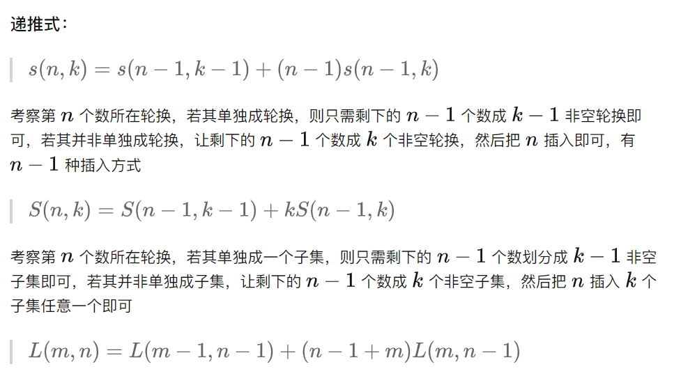

第一类斯特林数（Stirling Number）
第一类斯特林数（斯特林轮换数）[nk]，也可记做 s(n,k)，表示将 n 个两两不同的元素，划分为 k 个互不区分的非空轮换的方案数。 也就是说有n个人，把它们分配到k张indistinguishable的圆桌上，with no table empty，那么有几种分配方案？（注意圆桌上的轮换方案属于同一种） 一个轮换就是一个首尾相接的环形排列。我们可以写出一个轮换[A, B, C, D] ，并且我们认为 [A, B, C, D]=[B, C, D, A]=[C, D, A, B]=[D, A, B, C] ， 即，两个可以通过旋转而互相得到的轮换 是等价的。注意，我们不认为两个可以通过翻转而相互得到的轮换等价，即[A, B, C, D] =[D, C, B, A]
递推
[nk]=[n−1k−1]+(n−1)[n−1k] [nk−2]=2[n3]+3[n4] 将该新元素置于一个单独的轮换中，共有 [n−1k−1]种方案； 将该元素揷入到任何一个现有的轮换中，共有(n−1)[n−1k]种方案。、 第二类
